Whitepaper
Our Mission
Decentralization is entering nearly every facet of life as we know it and will continue for the foreseeable future. We believe charity should be no different. Decentralizing how we donate will help emerging charities to advocate, advertise and receive donations via The GIV Foundation and our Community., The Giving platform was created to allow people from around the globe to share, invite and vote on reputable charities to receive donations. Charitable organizations that provide for smaller & lesser-known causes, constantly need donations to jumpstart and complete their mission. Non-Profits, resolving real-world challenges, now have a platform to gain recognition from a community of individuals that actively seek reputable charities in which they determine the allocation of all funds raised. We love the idea of newcomers entering the game and organizing foundations that give back. That’s why we created the Giving Pool & The $GIV Token. With a community-driven foundation, The Giving Platform allows for:
the importance of charity
Charity is the idea of giving out resources - like currency - to groups dedicated in saving our world’s vast ecosystem. Each charity has a mission to ensure the protection of human rights and environmental safety. These selfless acts of giving bring out our natural ability to evolve as a species. By harvesting the power of community, people of all backgrounds and generations come together in unity to sustain peace and justice for the lives of others. The incredible generosity of these individuals results in positive transformation throughout our world. This act of kindness has been around for hundreds of years mainly preserving public health, poverty, and inequality. But there are other groups that have unique objectives that are equally important for evolving.
raising awareness
Over 100,000 organizations are actively organizing charity work throughout the globe today. With big names like the Welcome Trust Foundation, Red Cross, St Judes and others taking the spotlight it is sometimes difficult for newer and smaller groups to get the recognition they need. We created the Giving Foundation to promote charities of all categories and enter them to receive donations.
Core Foundation of GIV
It all begins with our unique approach for creating a platform and community that constantly fundraises charitable groups while rewarding token holders. We accomplished this vision by inventing the $GIV Token & The Giving Pool. People from around the world will gather and bring recognition upon a diverse variety of charitable associations via our Telegram & Discord channel. Our GIV Admins will carefully review and choose worthy candidates to be entered into our Tally List. Once an organization is verified, our Discord Community will vote for who is featured in the Giving Pool and all $GIV Token Holders will be eligible to vote on who receives that donation. Visit www.TheGivingPool.io to view the Pools statistics and Tally List.
The Importance of The Giving Pool
There are tons of known and unknown charities out there in need of funding for many different projects. We aim to generate ETH for these associations actively solving real world concerns and empowering resolve. Here is a place where the community has the power to choose what their money is allocated towards.
The Giving Pool
Written in $GIV Token’s smart contract is a 10% tax on every transaction. 5% of that tax is converted into ETH and sent to a wallet that represents “The Giving Pool.” The purpose of this pool is to reach a certain amount of ETH, at which point it will be automatically donated to the verified charity that is chosen by the community.
How Charities Are Chosen
By the community, of course. Charities of all sorts are encouraged to detail the work they’ve done and what they plan to do if THE GIVING POOL were to support their vision. They can post live our the discord to the community in our AMA session that will allow users and holders to find out more about the mission and why they need to be funds to achieve it. Every cycle, our admins will review all charities presented by the community and release a poll to users in our Discord and Telegram servers. Voting will take place, bringing to the light local and national charities that are important to our community. From here, there will be a round of research and approval of those who rise to the top.
The Tally List
Trending candidates throughout the GIV community are entered as the final selection to be featured as the pool’s contestants. As the pool is filling, if you’re a token holder, you’ll be able to connect to the dApp in order to prove ownership of the $GIV Token. The top voted will be the charity receiving the pools donation upon fulfillment.
Charity Guidelines
Pretty important, right? There are a lot of people in every community. No matter what happens, there may always be non-qualifying charities that are recommended to use to add to our list. We will be judging every charity that is presented with three simple criteria that allow us to determine, at a glance, whether they are real contenders for donation or not worth our (or the community’s) time.
Crypto-Friendly
A charity, number one, has to be able to accept crypto currency and utilize it for their purposes.
Tax Status
It is not an end all be all since we have the goal of helping to raise up lesser-known and funded charities, but your current tax status, incorporation status, and/or plans for both will be part of the consideration that admins put into whether or not you can be considered.
The Giving Token (GIV)
$GIV was developed as an ERC-20 token to provide a constant stream of funding into the Giving Pool while rewarding holders. Each transaction has a 10% tax built that will be split in half, converted, and recycled into the community. 5% will be converted into ETH and sent to the Pool for funding. 5% will be converted into USDT and redistributed into the wallets on Token Holders. We set up a Giveaway Wallet that will be locked and hold 15% of the circulating supply to collect rewards in USDT and host community giveaways and airdrops. Here is a reward system built into the structure of the token. As you hold, you will continually be rewarded. The bottom line, the $GIV Token is much more than just an investment, it’s a tool for giving. and receiving. You can take part in giving back to those in need, while enjoying your investment and reward system.
Summary
THE GIVING POOL and THE GIVING TOKEN have a simple purpose. Decentralization of the machine that is charity. We want local and lesser known charities with the best intentions and less overhead to have their chance to shine and put more of the users dollars into work for the end user. The ability to invest and build wealth through our platform is a pleasant by-product of this vision. We hope you will consider getting involved in THE GIVING POOL.